- Published
- 2017-02-11
This article will show you how to setup Jenkins on Debian to use Docker to build private projects hosted on GitHub. I wrote this article mostly as a reminder to myself.
This article assumes you have a Debian Jessie host and a normal user with sudo
privileges. When writing this article Docker was version 1.30.0 and
Jenkins 2.42.
Installing dependencies
First off, we need to install some packages used by apt to retrieve packages over HTTPS:
sudo apt-get install -y \ apt-transport-https \ ca-certificates \ software-properties-common
Then we need to add the keys for the Jenkins and Docker repositories:
wget -q -O - https://pkg.jenkins.io/debian/jenkins-ci.org.key | sudo apt-key add - wget -q -O - https://yum.dockerproject.org/gpg | sudo apt-key add -
Then we need to add the source lists for the repositories:
sudo sh -c 'echo deb http://pkg.jenkins.io/debian-stable binary/ > /etc/apt/sources.list.d/jenkins.list' sudo sh -c 'echo deb https://apt.dockerproject.org/repo debian-jessie main > /etc/apt/sources.list.d/docker.list'
Then we can install the needed packages:
sudo apt-get update --fix-missing sudo apt-get install -y jenkins docker-engine
Then we should make sure the Jenkins and Docker services are running:
sudo systemctl status jenkins
● jenkins.service - LSB: Start Jenkins at boot time Loaded: loaded (/etc/init.d/jenkins) Active: active (running) since Tue 2017-01-24 13:08:32 GMT; 4min 6s ago
sudo systemctl status docker
● docker.service - Docker Application Container Engine Loaded: loaded (/lib/systemd/system/docker.service; enabled) Active: active (running) since Tue 2017-01-24 13:06:21 GMT; 6min ago
Configuring Jenkins
Now that Jenkins and Docker is installed it's time to configure Jenkins.
First we need the initial admin password for the Jenkins web interface. Which is found here:
sudo cat /var/lib/jenkins/secrets/initialAdminPassword
By default Jenkins web interface is accessible on port 8080, so we open
http://localhost:8080 in our web browser and enter the admin password at the
first step:
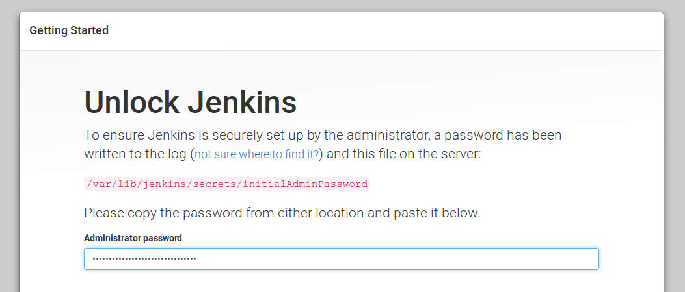
We then press Select plugins to install:

We then unselect all recommended plugins:
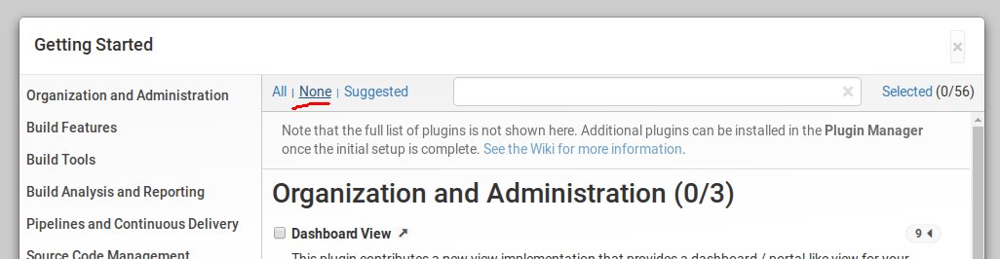
We then find the Git plugin and select it for installation:
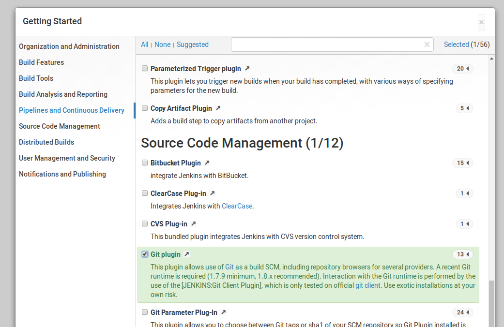
We then press Install and wait for all plugins to get installed:
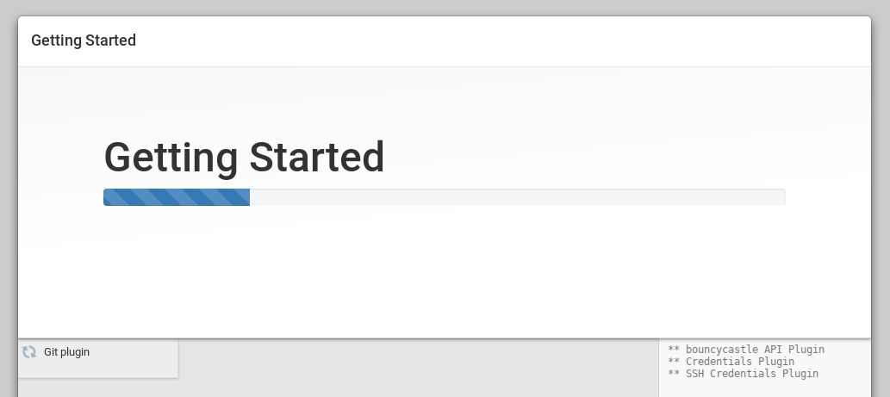
After that we can either create a personal admin user or continue with the default admin user:
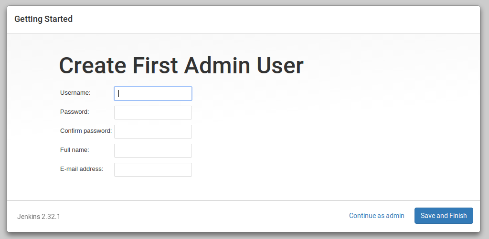
After that we are shown the Jenkins dashboard:
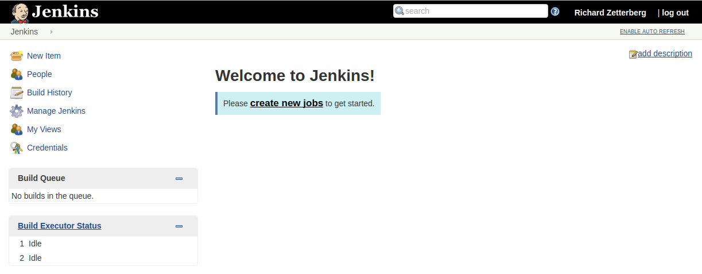
We are now ready to create our first project.
Creating our first Jenkins project
We start off by pressing New item in the main menu to the left, then select Freestyle project and enter the name of our project:
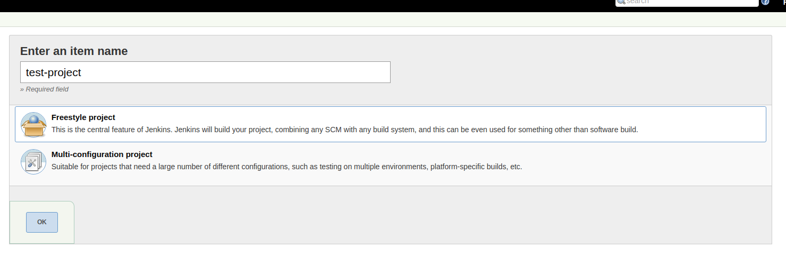
In the configuration view of our project, we select Git for source code management:
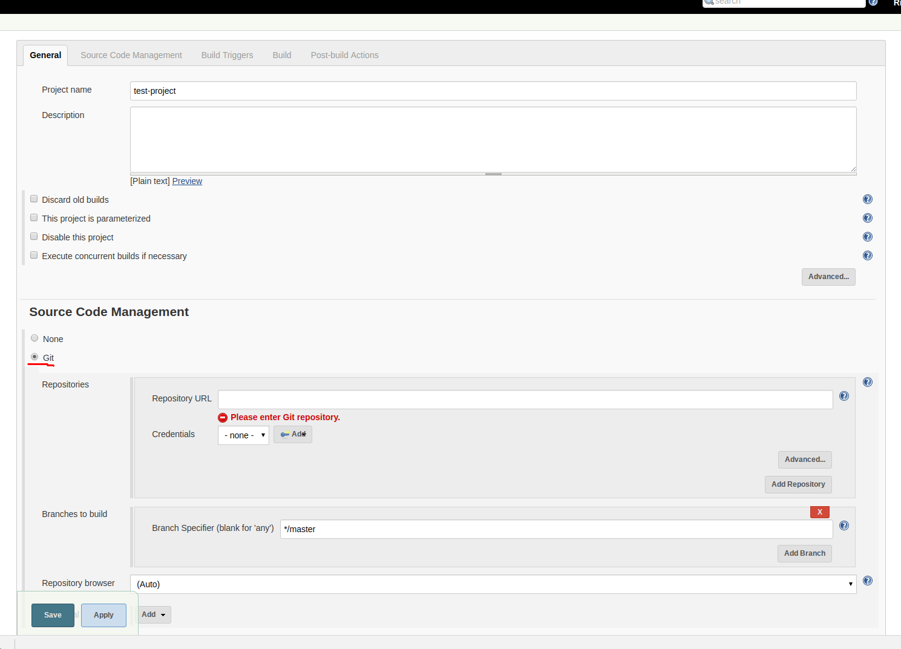
We then enter the HTTPS link to our private GitHub repository:
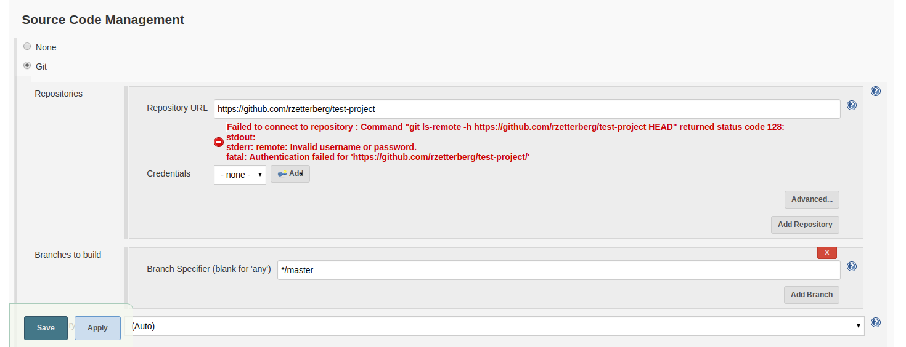
This will fail since our repository is private, so we need to authenticate against GitHub when cloning the project. There are two ways to do this that I know of:
- Cloning over
SSHusing private key - Cloning over
HTTPSusing personal access token
Cloning over HTTPS
This article will use personal access token, because anyone using GitHub already knows how to access repositories over SSH.
Personal access tokens function like ordinary OAuth access tokens. They can be used instead of a password for Git over HTTPS, or can be used to authenticate to the API over Basic Authentication.
First we need to create the personal access token in GitHub before adding it as a credential in Jenkins.
We do this by opening Settings -> Personal Access Token and clicking Generate new token in GitHub. The created token should have access to private repositories enabled:

We then copy the newly created token:
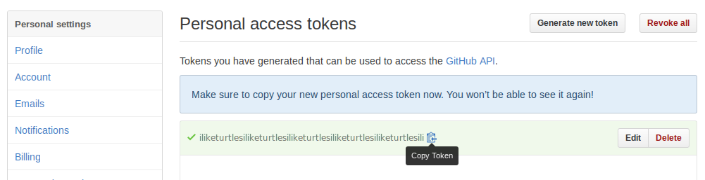
And go back to Jenkins and choose to create a new credential for your private project:
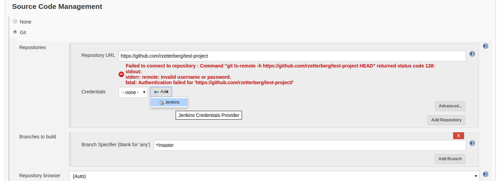
We then choose Username and password and use your GitHub username and the personal access token as password:
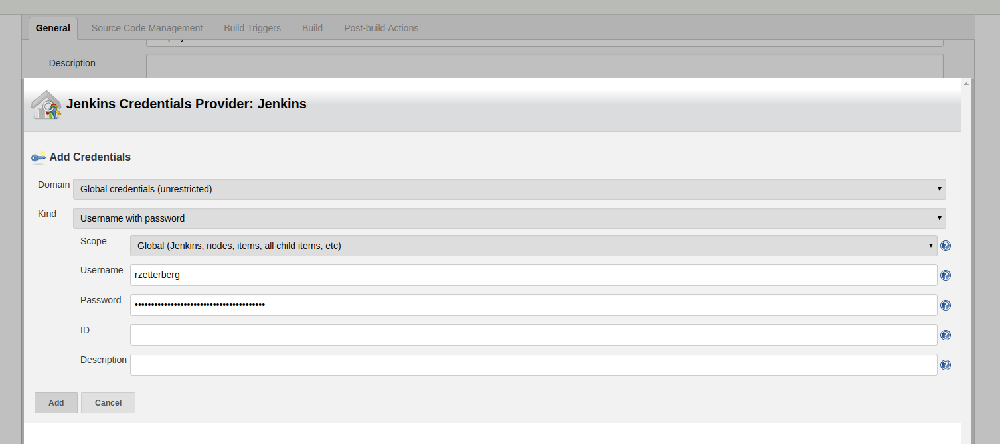
After adding the new credential and selecting it in the dropdown the clone error should disappear:
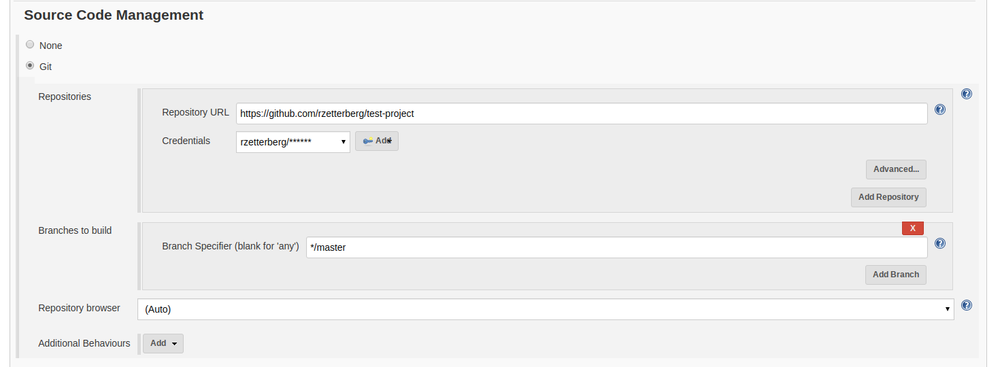
Now Jenkins can retrieve the source code of our private repository! When a build is started Jenkins will create a directory called the workspace, where the build will take place. The Git plugin will clone the repository and put all the source files inside that directory.
A projects workspace is stored in /var/lib/jenkins/workspace/[PROJECT NAME]
by default. For our project the full path will be
/var/lib/jenkins/workspace/test-project.
This is useful if we want to run build commands manually to debug failing builds.
Building the Docker image
To define how a project is built in Jenkins you create Build steps that are performed sequentially. There are different types of build steps, in this example we will use Execute shell for simplicity.
Our first build step will build the Docker-image from our projects Dockerfile.
We start by scrolling down to the Build section and clicking Add build step -> Execute shell:
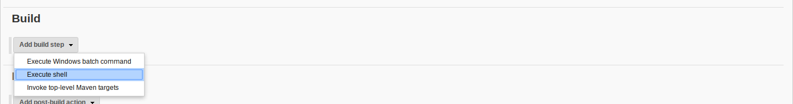
We then add the Docker build command to that step:
docker build -t test-project:latest .
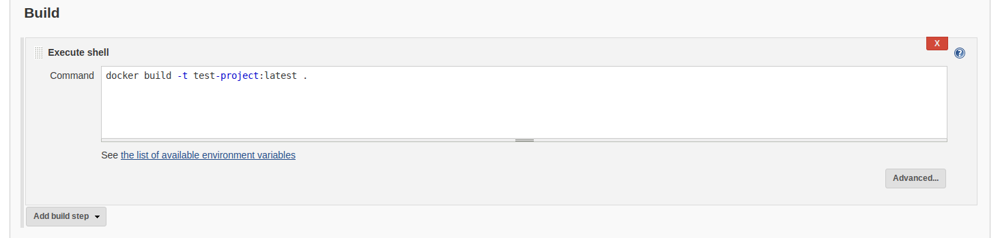
Building inside the Docker container
Our next task is to create a Jenkins build step that runs our projects build command inside a Docker-container from our built Docker-image.
We start by adding another Execute shell build step:
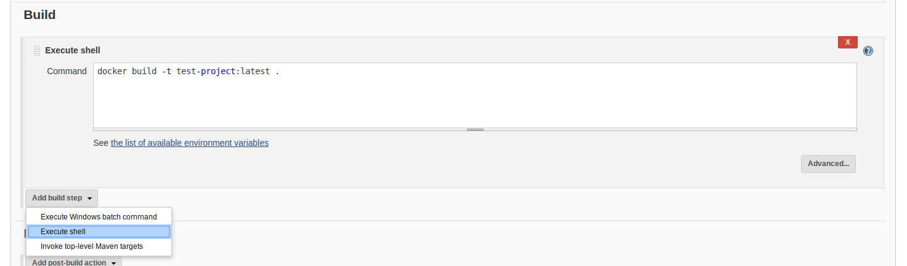
Suppose we have a script called build_project.sh in our repo that builds the
project. To run that script inside a Docker-container created from our image
we simply use the Docker run command in our Jenkins build step:
docker run -v $WORKSPACE:/repo test-project:latest ./build_project.sh
$WORKSPACE is an environment variable that Jenkins exposes to the shell
session of the build step. The value of the variable is the absolute path to
the directory where the build is carried out.
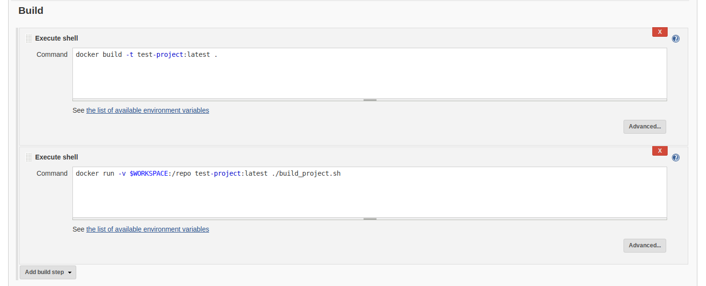
We then click Save
Running our first build
Our final task is just to start a build of our Jenkins project. Simply click Build now in the project. Under Build history you will see the build running.
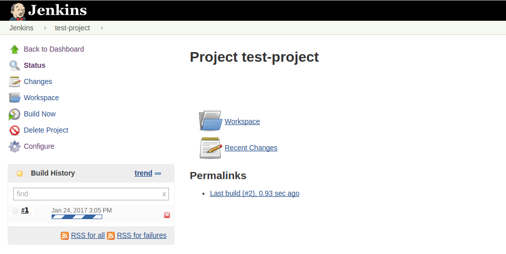
You can follow the progress of the build by clicking on it and selecting Console output:
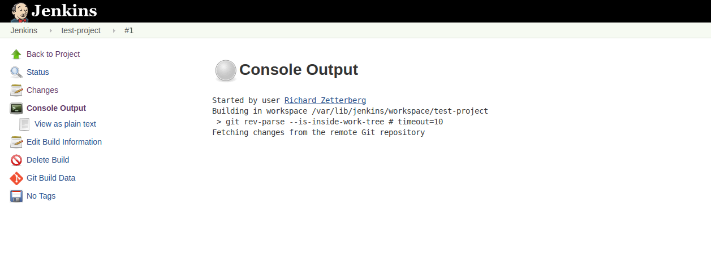
And that's it! Now we have a Jenkins project that when built will:
- Clone a private GitHub repo
- Build a Docker-image from the repos Dockerfile
- Run a build script inside the Docker-container
And then?
You could install the GitHub Plugin and configure the project to be built when a change is pushed to GitHub (a PR, a commit, etc). Or you could use the plugin to show the build status of PRs.
You could install the Embeddable Build Status Plugin to allow a Jenkins build status badge to be shown on GitHub when viewing the README of the repository.
You could install the GitHub OAuth Plugin to allow users to login on GitHub and be automatically authenticated on Jenkins.
You could install the Github Issues Plugin to allow Jenkins to create a issue on GitHub when a build fails.
You could try out Jenkins Pipelines to allow writing a Jenkinsfile file that
defines how the project is built by Jenkins and is checked into the projects
repository.
You could try the Blue Ocean plugin for a more modern Jenkins user interface: